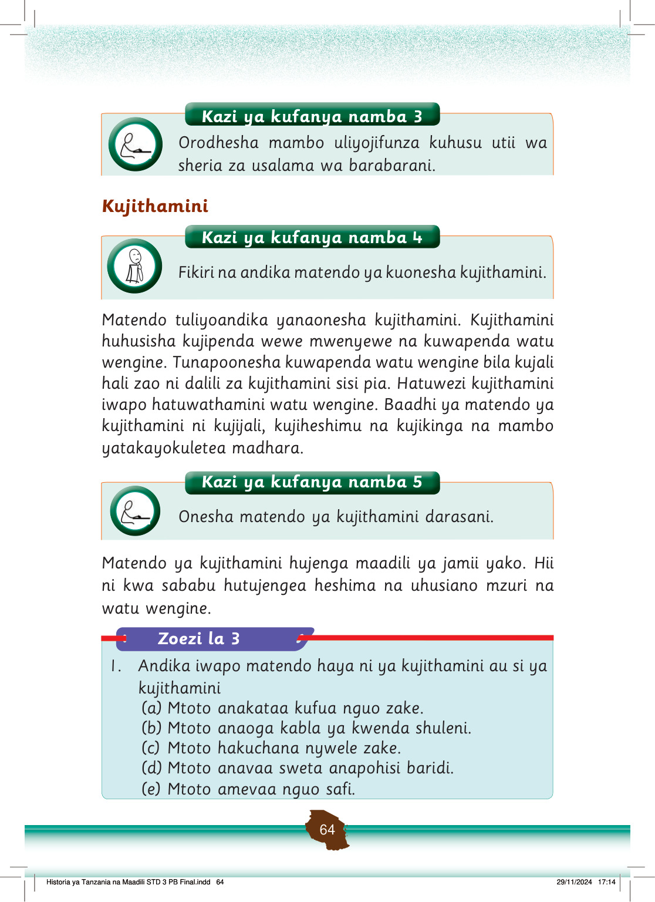

Kazi ya kufanya namba 3
Orodhesha mambo uliyojifunza kuhusu utii wa sheria za usalama wa barabarani.
Kujithamini
Kazi ya kufanya namba 4
Fikiri na andika matendo ya kuonesha kujithamini.
Matendo tuliyoandika yanaonesha kujithamini.
Kujithamini huhusisha kujipenda wewe mwenyewe na kuwapenda watu wengine.
Tunapoonesha kuwapenda watu wengine bila kujali hali zao ni dalili za kujithamini sisi pia.
Hatuwezi kujithamini iwapo hatuwathamini watu wengine.
Baadhi ya matendo ya kujithamini ni kujijali, kujiheshimu na kujikinga na mambo yatakayokuletea madhara.
Kazi ya kufanya namba 5
Onesha matendo ya kujithamini darasani.
Matendo ya kujithamini hujenga maadili ya jamii yako.
Hii ni kwa sababu hutujengea heshima na uhusiano mzuri na watu wengine.
Zoezi la 3
1.
Andika iwapo matendo haya ni ya kujithamini au si ya kujithamini
(a) Mtoto anakataa kufua nguo zake.
(b) Mtoto anaoga kabla ya kwenda shuleni.
(c) Mtoto hakuchana nywele zake.
(d) Mtoto anavaa sweta anapohisi baridi.
(e) Mtoto amevaa nguo safi.
si ya kujithamini
ya kujithamini
si ya kujithamini
ya kujithamini
ya kujithamini